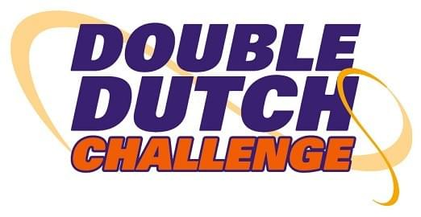

定員50名（小中学生）／申し込み期間：11/18（水）まで
※定員になり次第募集を終了いたします
主催 日本ジャンプロープ連合 福岡県支部
共催 NPO法人 福岡県レクリエーション協会
後援 久留米市教育委員会
定員 50名（小中学生）
＊事前申し込み必須。定員になり次第お申込みを締め切ります。
参加費 無料
持ち物 室内シューズ／スポーツドリンク／運動に適した服装
【感染症対策について】
体調のすぐれない方、発熱や風邪症状のある方は参加をご遠慮いただきますようお願いいたします。
【撮影について】
活動の記録写真を撮影し、SNS・HPにて掲載することがあります。